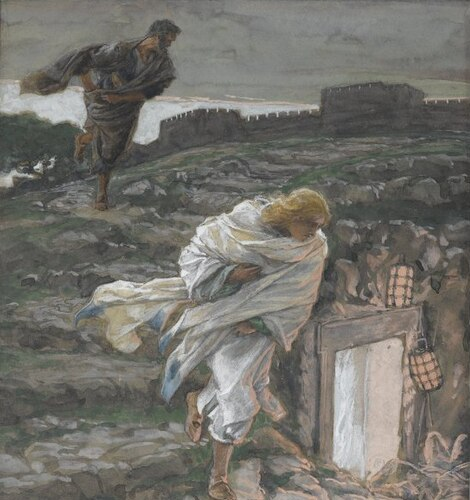
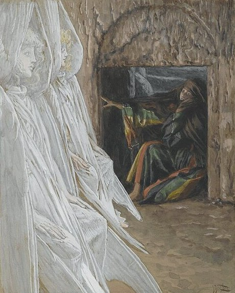
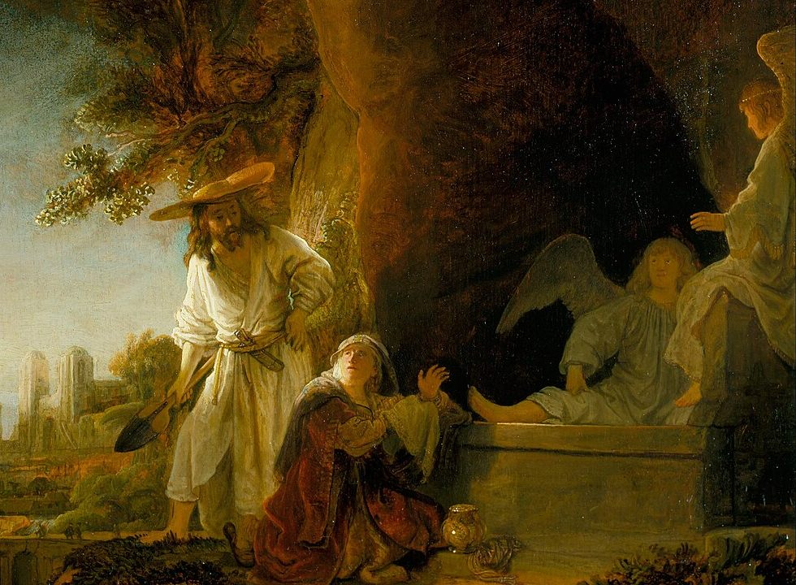
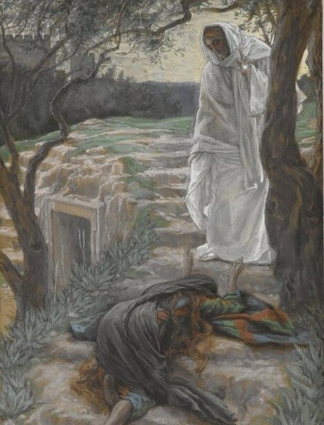
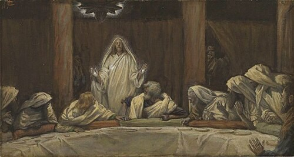
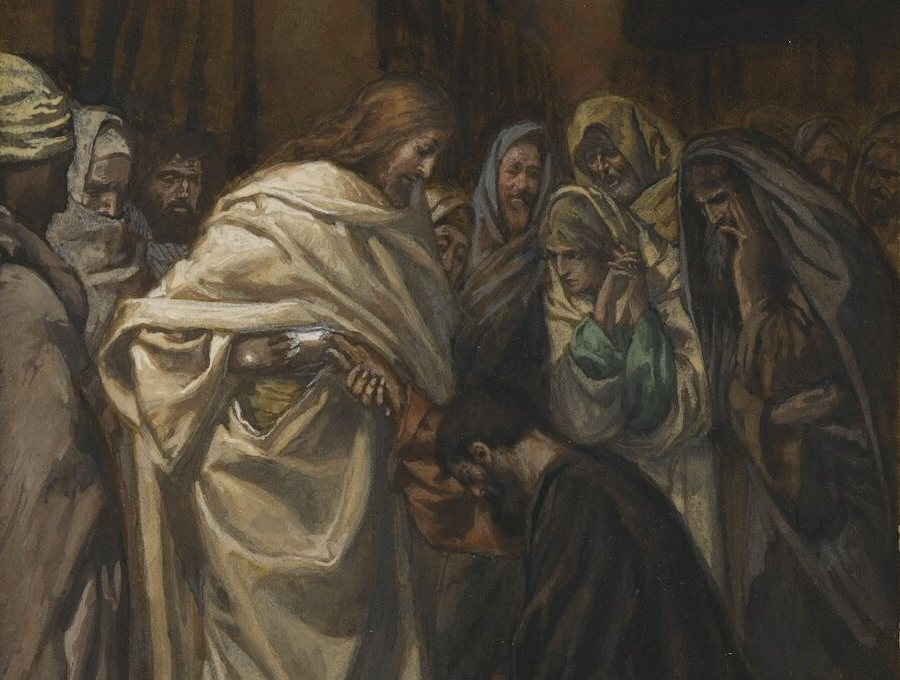

John 20
The empty tomb
Before sunrise the stone is gone. By evening the risen Lord stands among his frightened friends, and a week later Thomas falls at his feet: “My Lord and my God.”
Things to watch for
Keep these questions in the back of your mind as we read. We'll come back to every one of them at the end.
- The resurrectionWhat did the disciples find that showed Jesus had risen?
- Your pastWho saw the risen Jesus first, and what does that tell us?
- FearWhat did Jesus bring into the locked room?
- Sent outWhat did Jesus give the men he was sending out?
- DoubtHow did Jesus treat Thomas and his doubts?
- Why John wroteWhy was this Gospel written?
Part one
The empty tomb
Verses 1–10
Before the sun is up, the stone is already gone.
While it was still dark
A rich man's tomb was a room cut into the rock. A heavy round stone sat in a groove across the door, and it took several men to roll it.
Mary came to finish mourning a dead man. She found the stone already moved. The stone wasn't rolled away to let Jesus out. It was rolled away to let the witnesses in.
Her first thought was grave robbers: “They have taken away the Lord.” Nobody that morning was expecting a resurrection.
The first day of the week
Jesus died on Friday and lay in the tomb through the Sabbath. On Sunday morning he rose. John marks the times as the risen Lord shows himself:
“After eight days” was the next Sunday (they counted both ends of the week). Jesus kept meeting his people on the first day of the week, and the early church went on gathering on that day.
Every Sunday is a small Easter. The worst day in history was Friday. Sunday came anyway.
What the grave clothes said
Jesus had been wrapped in strips of linen with about a hundred pounds of spices (19:39–40). Now the wrappings were lying there, with no body in them.
The cloth that had been around his head was rolled up and set apart by itself.
Grave robbers don't stop to unwrap a body and tidy up. Thieves would have taken the body, wrappings and all. Whatever happened in this tomb, nobody stole him.

Three looks into the tomb
English says “saw” every time, but John uses three different Greek words, and each look goes deeper:
- John, at the door · v.5blepō
He glanced in from outside.
- Peter, inside · v.6theōreō
He studied it, taking it all in.
- John, inside · v.8eidon
He saw what it meant, and believed.
“The other disciple, whom Jesus loved” is John himself, the man who wrote this book. He never names himself. He just tells you that he saw, and believed.
It was in the Book all along
The Scriptures had said it a thousand years before:
“For thou wilt not leave my soul in hell; neither wilt thou suffer thine Holy One to see corruption.”
Psalm 16:10
And Jesus had told them himself, from the start:
“Jesus answered and said unto them, Destroy this temple, and in three days I will raise it up.”
John 2:19
They still didn't get it until they stood in the empty tomb. Faith often grows slowly. God is patient with slow learners, and these men are proof.
Part two
“Mary”
Verses 11–18
She came looking for a body. She found her Lord.

She stayed
Peter and John went home. Mary stayed outside the tomb and cried. She had nowhere else she wanted to be.
She was so taken up with her grief that two angels didn't even slow her down. She answered them like they were anybody.
Jesus had told his friends this day was coming:
“Verily, verily, I say unto you, That ye shall weep and lament, but the world shall rejoice: and ye shall be sorrowful, but your sorrow shall be turned into joy.”
John 16:20
One word

“To him the porter openeth; and the sheep hear his voice: and he calleth his own sheep by name, and leadeth them out.”
John 10:3
Through tears and in the half-light she took him for the gardener. She didn't recognize him by looking. She recognized him when he called her by name.
Who got to see him first
Not Peter. Not John. Not the high priest or Pilate. The first person to see the risen Lord was Mary Magdalene. Here is what we know about her past:
“And certain women, which had been healed of evil spirits and infirmities, Mary called Magdalene, out of whom went seven devils,”
Luke 8:2
Seven devils. Whatever her life had been, it was dark, and Jesus set her free. (Nothing in the Bible says she was a prostitute. That idea came along centuries later.)
Jesus didn't give the first look at the empty tomb to the most respectable person in Jerusalem. He gave it to a woman with a past who loved him and stayed. Your past doesn't disqualify you. It might be the very thing that makes you stay close.

“Touch me not”
The Greek means “Stop holding on to me.” Mary had grabbed hold of him, as if she would never let him go again. Jesus wasn't pushing her away. He was saying: I'm not leaving yet. Don't cling. Go and tell.
And look what he calls the men who had run away three days earlier:
- Servantswhat they had been
- FriendsJohn 15:15
- My brethrenJohn 20:17
“My Father, and your Father.” Because of the cross, his Father is now our Father. You don't just get forgiven. You get brought into the family.
Part three
Peace be unto you
Verses 19–23
A locked door doesn't keep him out.

Into the locked room
Ten men behind a barred door. Judas was dead, and Thomas wasn't there. Three days earlier every one of them had run away and left Jesus alone.
Then he was just there, in the midst, without the door being opened. His first words weren't “Where were you?” They were “Peace be unto you.”
Then he showed them his hands and his side. The same body, with the scars. A man hiding in fear and shame is exactly the man Jesus comes looking for.
The breath of life
Genesis 2:7
And the LORD God formed man of the dust of the ground, and breathed into his nostrils the breath of life; and man became a living soul.
John 20:22
And when he had said this, he breathed on them, and saith unto them, Receive ye the Holy Ghost:
At creation God breathed life into the first man. Here the risen Lord breathes on his men: a new creation is starting. He gave them the Spirit's power in full at Pentecost, just as he promised (Acts 1:8).
“In whom ye also trusted, after that ye heard the word of truth, the gospel of your salvation: in whom also after that ye believed, ye were sealed with that holy Spirit of promise,”
Ephesians 1:13
Today, the moment a man believes, the Holy Spirit comes to live in him for good. You don't have to wait for him or earn him.
Sent with a message
“Remit” means to let go, to forgive. This doesn't make the disciples into judges who decide who gets forgiven. Only God forgives sins. It means they carry the message that tells men where forgiveness is found.
Remitted
whoever believes
When a man believes the gospel, they can tell him straight: your sins are forgiven.
Retained
whoever refuses
When a man turns it down, they can tell him just as plainly: you're still carrying them.
“To him give all the prophets witness, that through his name whosoever believeth in him shall receive remission of sins.”
Acts 10:43
Part four
My Lord and my God
Verses 24–31
The doubter gets exactly what he asked for, and more.
The man who missed the meeting
Didymus is Greek for twin. Thomas wasn't a coward. When Jesus headed back toward danger, he was the one who said:
“Then said Thomas, which is called Didymus, unto his fellowdisciples, Let us also go, that we may die with him.”
John 11:16
He was a loyal, blunt man who said what he thought. When his hopes died on the cross, he went off alone with his grief. So he wasn't there the night Jesus came.
“Not forsaking the assembling of ourselves together, as the manner of some is; but exhorting one another: and so much the more, as ye see the day approaching.”
Hebrews 10:25
When you're hurting, the pull is to isolate. That's usually the worst thing to do. Show up. You never know which day he'll meet you with your brothers.
He heard every word
Jesus wasn't in the room when Thomas laid down his terms. But when he came back, he answered them one by one:
No scolding, no lecture. He met the man right where his doubt was. Honest doubt that keeps looking for the truth ends at Jesus' feet.

The book starts and ends here
John 1:1, the first verse
In the beginning was the Word, and the Word was with God, and the Word was God.
John 20:28, the last confession
And Thomas answered and said unto him, My Lord and my God.
John opened his Gospel by telling us Jesus is God. He closes it with a doubter on his knees saying the same thing to Jesus' face. And Jesus doesn't correct him. He accepts it.
The man who doubted the most made the greatest confession in the whole book.
That's us
Thomas had to see. Jesus pronounced a blessing on everybody who would come after him and believe without seeing. The word was passed down hand to hand:
“Whom having not seen, ye love; in whom, though now ye see him not, yet believing, ye rejoice with joy unspeakable and full of glory:”
1 Peter 1:8
Why this book was written
Jesus did far more than John wrote down. John picked seven signs, from water made wine to Lazarus raised, and then the greatest sign of all, the empty tomb. Every one of them was chosen for you.
This isn't a book to admire. It's a book to answer. The whole Gospel comes down to one question: will you believe? Whoever believes has life.
Points to remember
- The resurrection“He saw, and believed” 20:8An open tomb, empty grave clothes, and a risen Lord with scars in his hands.
- Your past“Jesus saith unto her, Mary” 20:16He showed himself first to a woman he'd set free from seven devils. Your past doesn't disqualify you.
- Fear“Peace be unto you” 20:19He walks into the locked room with peace, not blame.
- Sent out“Receive ye the Holy Ghost” 20:22He sends his people with his peace, his Spirit, and a message of forgiveness.
- Doubt“Be not faithless, but believing” 20:27He met Thomas's doubt head on, and Thomas said, “My Lord and my God.”
- Why John wrote“That ye might believe” 20:31So that we would believe Jesus is the Christ, the Son of God, and have life through his name.
Question 1 of 6
The resurrectionWhat did the disciples find that showed Jesus had risen?
What verses tell us about this?
“For I delivered unto you first of all that which I also received, how that Christ died for our sins according to the scriptures; And that he was buried, and that he rose again the third day according to the scriptures:”
1 Corinthians 15:3–4
Answer
The stone was rolled away, and the grave clothes were lying there with no body in them, the head cloth rolled up by itself. No thief leaves a tomb like that. Then Jesus himself showed them his hands and his side. He was buried, and he rose again the third day.
Question 2 of 6
Your pastWho saw the risen Jesus first, and what does that tell us?
What verses tell us about this?
“And certain women, which had been healed of evil spirits and infirmities, Mary called Magdalene, out of whom went seven devils,”
Luke 8:2
Answer
Mary Magdalene, a woman Jesus had set free from seven devils. He called her by name, and she became the first one to tell the news. Jesus doesn't save his best for the respectable. A dark past doesn't keep you from him, and the people he's set free often love him the most.
Question 3 of 6
FearWhat did Jesus bring into the locked room?
What verses tell us about this?
“Peace I leave with you, my peace I give unto you: not as the world giveth, give I unto you. Let not your heart be troubled, neither let it be afraid.”
John 14:27
Answer
Peace. The men who had deserted him were hiding behind a barred door, and he came in anyway. He didn't come with blame. He came with “Peace be unto you,” and their fear turned to gladness. No door you hide behind can keep him out.
Question 4 of 6
Sent outWhat did Jesus give the men he was sending out?
What verses tell us about this?
“But ye shall receive power, after that the Holy Ghost is come upon you: and ye shall be witnesses unto me both in Jerusalem, and in all Judaea, and in Samaria, and unto the uttermost part of the earth.”
Acts 1:8
Answer
His peace, his own mission (“as my Father hath sent me”), his Holy Spirit, and a message: whoever believes is forgiven. He doesn't send anybody out empty-handed. Every believer has the Spirit living in him and a story of forgiveness to tell.
Question 5 of 6
DoubtHow did Jesus treat Thomas and his doubts?
What verses tell us about this?
Answer
He came back for him. He answered every one of Thomas's conditions, invited him to touch the scars, and told him to stop doubting and believe. Thomas answered, “My Lord and my God.” Bring your honest questions to Jesus. He's not afraid of them.
Question 6 of 6
Why John wroteWhy was this Gospel written?
What verses tell us about this?
“In the beginning was the Word, and the Word was with God, and the Word was God.”
John 1:1
Answer
So that we would believe Jesus is the Christ, the Son of God, and by believing have life through his name. John chose every sign and every story for that. The Gospel isn't just information. It's an invitation, and anyone who believes receives life.
Prayer requests
What can we pray about for you today?
“Peace I leave with you, my peace I give unto you: not as the world giveth, give I unto you. Let not your heart be troubled, neither let it be afraid.”
John 14:27